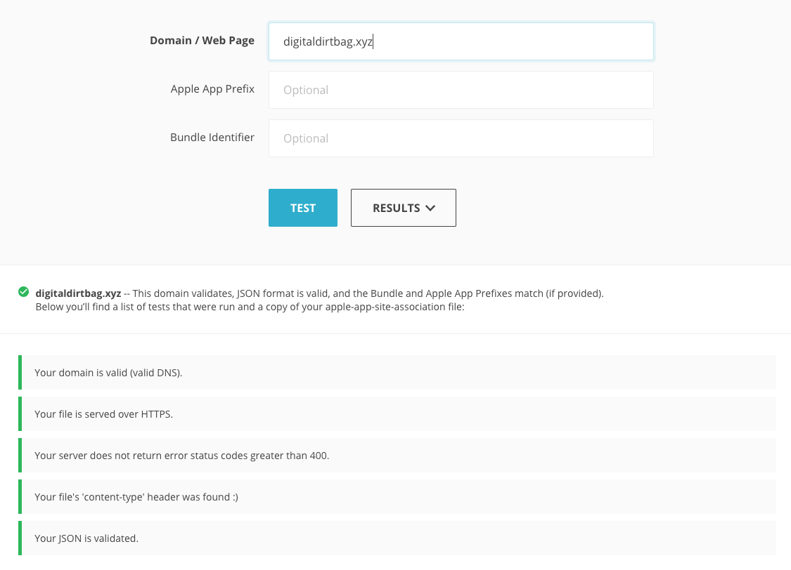
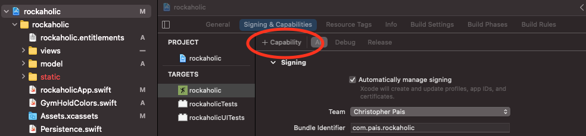
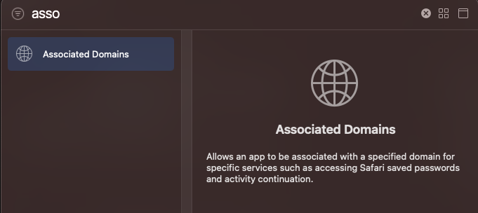
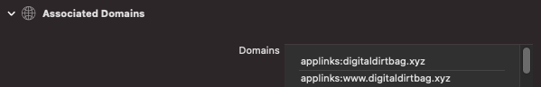

Last Updated: Nov 2020
Using: iOS SDK 14.2
I struggled for a long time to figure out how to implement Universal Links properly. In addition there was very little documentation on how you open into your app from a QR code. Similarly I wanted to handle Universal Links using NFC tags. You basically get this functionality for free once you’ve implemented for QR codes! This guide serves as a way to implement the base level of Universal Link functionality as well as handling QR codes.
Universal Links allow you to redirect users from a webpage directly into your app’s context. It is applicable only for iOS devices. With Universal Links you can maintain the context the user previously had on the webpage but give them a native experience. Often times this is called deep linking.
By adding a specific file (apple-app-site-association) on your webserver, you can support Universal Links relatively easily. When your app is downloaded the user’s device will query your server for this file. Once it’s done this, any time the user visits one of the routes provided in this file, they will be directed into your native experience.
Steps to Implement
onOpenURL to handle LinksonContinueUserActivity to handle QR CodesBefore working on the App at all we want to have everything set up for the app to support our Universal Link. The first thing to do is create the apple-app-site-association (AASA) and serve it. This will allow Apple to know when to open your app.
For example my AASA looks like this:
{
"applinks": {
"apps": [],
"details": [
{
"appID": "UWFLB4GC25.com.pais.rockaholic",
"paths": ["/route/*"]
}
]
},
"activitycontinuation": {
"apps": [
"UWFLB4GC25.com.pais.rockaholic"
]
}
}Breaking this down you only need to do two things.
appID to be your TEAM_ID.APP_BUNDLE_ID
TEAM_ID = UWFLB4GC25
developer.apple.com > Accounts > Membership.APP_BUNDLE_ID = com.pais.rockaholicpaths to be the URL’s you want to treat as universal links.
route
activitycontinuationmay not be necessary here, but according to this blog it was. If you run into trouble with your Universal Links you may want to add this too.
Once you have your apple-app-site-association created, you will want to add this file to your webserver.
The requirements for serving it are as follows:
apple-app-site-associationContent-Type header set to application/json/.well-known directoryThere are a few tools you can use to validate your AASA after you have it on your server. Even if you validate your AASA you may run into some frustration, but it is a good thing to check off your list.
The Branch AASA Validator is the best I found. Just put in your domain and it will check everything for you. You should see all green like the below if it’s good!

Apple has their own validation tool, however it doesn’t think my App is valid 🤷🏽♂️. I wouldn’t recommend it. It just added to the confusion of the process.
You have to add the “Associated Domains” entitlement for your app to work.
To do this, open your apps .xcodeproj file. After this click the + Capability button illustrated below

This will bring up a window which looks like a big list, filter out this list for Associated Domains

This will add a new section for the Associated Domains which then you can add your domain to

After these steps your app should be set up to handle the Universal Link.
You may also need to do something similar for your app on developer.apple.com… See this
onOpenURL to handle linksonOpenURL is a callback which will be called when a user taps a link that matches the specified paths in your AASA. This should happen from a webpage, the notes application, etc. However this will only happen when the link is opened in Safari as far as I can tell. If you want to link from your site say www.example.com to www.example.com/thing_to_handle/5 make sure you specify the whole URL path instead of the shorthand /thing_to_handle/5. If you do the shorthand your Universal Link will not open by default.
In your main App file you will have the body: Scene variable. You will want to handle onOpenURL within this. I’ve done it as my TabView get’s rendered. So far this has worked.
var body: some Scene {
WindowGroup {
TabView(selection: $selectedTab) {
ExploreView(state: state)
.tag(TabIdentifier.explore)
ExploreRoutesView(state: state)
.tag(TabIdentifier.route)
AddView()
.tag(TabIdentifier.add)
}.onOpenURL { url in
routeURL(url)
}
}
}You can see when getting the onOpenURL callback I am calling into a function routeURL which will handle the URL path to get to the same context as the webpage.
onContinueUserActivityIf you generated a QR code which points to a URL above, you might notice that the QR code opens your application but does not direct to the right view. In fact it doesn’t call onOpenURL at all. This left me puzzled for a while, but eventually figured out it should be handled by onContinueUserActivity instead. So you can add a similar handler there.
You will want to use the type NSUserActivityTypeBrowsingWeb to pass to this function. QR Codes will be opened in Safari in the background then directed to your app if that path is handled by your app.
Unlike onOpenURL you will get an NSUserActivity in the callback. Fortunately it has a very easy way to get the URL from it, and you can handle routing from there.
var body: some Scene {
WindowGroup {
TabView(selection: $selectedTab) {
ExploreView(state: state)
.tag(TabIdentifier.explore)
ExploreRoutesView(state: state)
.tag(TabIdentifier.route)
AddView()
.tag(TabIdentifier.add)
}.onOpenURL { url in
routeURL(url)
}
.onContinueUserActivity(NSUserActivityTypeBrowsingWeb, perform: { activity in
routeURL(activity.webpageURL!)
})
}
}Best to check out Donny Wals guide on handling Universal Links. He has some great examples on how you can handle routing in your own app. I ended up using a similar approach.
I would test a few things.
First would be in the Notes app. This seems like the most surefire way to see if you’re on the right path. For me the Universal Link from the Notes app always worked. That is I had a note with the link pasted into it. When I clicked the link it went directly to the app and where I wanted.
It should looks something like:
Second would be to test on your website. Ensure a link on your website will directly open your app. As mentioned earlier make sure you are using the full URL (https://www.yourdomain.com) path or this won’t work. Also if you type the URL directly into Safari it will not launch your app. This is because if a user directly is typing in the URL they are probably fine with the mobile experience, however if they are tapping a link they are probably fine with the app launching.
It should look something like:
Third would be to check the QR code. Open the camera app and point it to a QR Code which encodes the URL you want to open in the app.
It should looks something like:
Finally you may want to check an NFC tag opens your app properly. Note that it may open through onOpenURL or onContinueUserActivity. If the device prompts you to open in Safari it will open via onOpenURL. Otherwise via onContinueUserActivity.
It should looks something like this:
There are many finicky things which happen with Universal Links which were not covered. If you run into something weird don’t hesitate to contact me cj@cjpais.com. I’ll try to help to the best of my ability.
🍻 Cheers - CJ